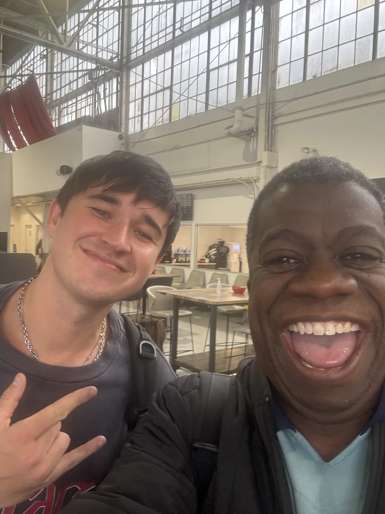

MUSIC · DEC 12 · Los Angeles
JOHN SUMMIT
A sidewalk hello. A much bigger next chapter.
A huge room. An unexpectedly personal feeling.
80days out
- When
- Sat Dec 12, 2026
- Where
- LA Memorial Coliseum, Los Angeles · Directions
- Light
- After dark
In the mix
A sidewalk hello after Worship at the Palladium in March 2024. Another unexpected meeting in November 2025, and this photograph together. His Countdown set a few weeks later. Now, the Coliseum. Companions for this next night are still open.
Before this night
2 real photographs from Gordon's album that lead here.
{kind=link}
{kind=link}
Dig into the sound and story
3 short chapters. Open the ones that call to you.
THE ALBUMComfort, inside the chaos.
In his own account of making Comfort in Chaos, John Summit describes moving beyond samples into original songwriting. He wanted the album to hold both the extroverted public artist and the more introspective person who returns from the show.
THE CRAFTListen for the emotion between the peaks.
The interview makes a useful listening route: explore the contrast between a dance-floor release and the vulnerable feeling around it. A track can work at enormous scale because its central emotion is small enough to recognize in yourself.
THE NEXT DOORAn artist with a wider circle.
His official site leads into Experts Only, his label, alongside the music and live dates. Follow that door when one artist’s sound makes you curious about who else they want you to hear.
Before we go
Artist recordings open on their own players. Not a promised setlist.
Swipe the picture, or use the arrow keys, for the next night.